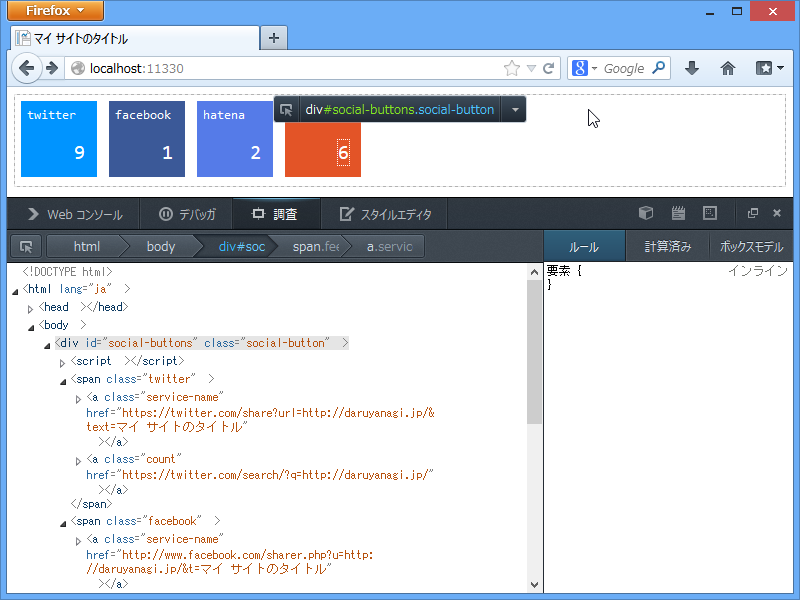

WebMatrix 3: フィードの購読者数を取得する（2: JavaScript 編）
公開日：

WebMatrix 3: フィードの購読者数を取得する（1：サーバーサイド編） - だるろぐ で吐いた JSON を JavaScript で読み取ってみる。
SocialButtons.js
Scrips フォルダの中にいれておく。jQuery が必要なので、NuGet で入手しておく。
function get_twitter_button(url, dest, text) { var share = 'https://twitter.com/share?url=' + url + '&text=' + text; var comment = 'https://twitter.com/search/?q=' + url; var span = $('<span>').addClass('twitter'); $('#' + dest).append(span); var element; element = $('<a>').text('twitter').addClass('service-name').attr('href', share); span.append(element); element = $('<a>').addClass('count').attr('href', comment); span.append(element); $.ajax({ url: 'http://urls.api.twitter.com/1/urls/count.json?url=' + url, dataType: 'jsonp', success: function (json) { element.text(json.count || 0); } }); }function get_facebook_button(url, dest, text) { var share = 'http://www.facebook.com/sharer.php?u=' + url + ’&t=' + text; var comment = '‘; var span = $(’<span>‘).addClass('facebook'); $(’#‘ + dest).append(span); var element; element = $(’<a>‘).text('facebook').addClass('service-name').attr('href', share); span.append(element); element = $(’<a>‘).addClass('count').attr('href', comment); span.append(element); $.ajax({ url: 'https://graph.facebook.com/‘ + url, dataType: 'jsonp', success: function (json) { element.text(json.shares || 0); } }); }
function get_hatena_button(url, dest, text) { var share = 'http://b.hatena.ne.jp/add?mode=confirm&url=' + url + ’&title=' + text; var comment = 'http://b.hatena.ne.jp/entry/‘ + url; var span = $(’<span>‘).addClass('hatena'); $(’#‘ + dest).append(span); var element; element = $(’<a>‘).text('hatena').addClass('service-name').attr('href', share); span.append(element); element = $(’<a>‘).addClass('count').attr('href', comment); span.append(element); $.ajax({ url: 'http://api.b.st-hatena.com/entry.count?url=' + url, dataType: 'jsonp', success: function (json) { element.text(json || 0); } }); }
function get_feed_button(url, dest, text) { var share = url + 'feed'; var comment = url; var span = $(’<span>‘).addClass('feed'); $(’#‘ + dest).append(span); var element; element = $(’<a>‘).text('feed').addClass('service-name').attr('href', share); span.append(element); element = $(’<a>‘).addClass('count').attr('href', comment); span.append(element); $.ajax({ url: ’/FeedCount/‘ + url, dataType: 'json', success: function (json) { element.text(json.total || 0); } }); }
function get_social_button(url, dest, text) { get_twitter_button(url, dest, text); get_facebook_button(url, dest, text); get_hatena_button(url, dest, text); get_feed_button(url, dest, text); }
Default.cshtml でテスト
これでだいたいうまく動くはず。
<!DOCTYPE html>@{ var page_title = "マイ サイトのタイトル"; }
<html lang="ja"> <head> <meta http-equiv="Content-Type" content="text/html; charset=utf-8"/> <meta charset="utf-8" /> <title>@page_title</title> <link href="~/favicon.ico" rel="shortcut icon" type="image/x-icon" /> <link href="~/Content/SocialButtons.css" rel="stylesheet" /> <script src="~/Scripts/jquery-1.9.1.js"></script> <script src="~/Scripts/SocialButtons.js"></script> </head> <body> <div id="social-buttons" class="social-button"> <script> get_social_button('https://blog.daruyanagi.jp/‘, 'social-buttons', ’@page_title') </script> </div> </body> </html>
今回は別に説明することはなにもない。div#social-buttons 以下にこんな感じの DOM が生成される。

話は変わるけど、最近の Firefox の開発者ツールはかなり進化している。おもにビジュアル的に。機能面では使いこなせていないモノが多数あるので、意見は差し控えておく。
それにしても JavaScript は苦手だなぁ……もう少しスマートに書けないものなのかな。